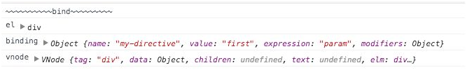

3.4.2 钩子函数实例和参数变化
在Vue.js 2.0中取消了指令实例这一概念，即在钩子函数中的this并不能指向指令的相关属性。指令的相关属性均通过参数的形式传递给钩子函数。
Vue.directive('my-directive', {
bind : function(el, binding, vnode) {
console.log('~~~~~~~~~~bind~~~~~~~~~');
console.log('el', el);
console.log('binding', binding);
console.log('vnode', vnode);
},
update : function(el, binding, vnode, oldVNode) {
….
},
componentUpdated(el, binding, vnode, oldVNode) {
….
},
unbind : function(el, binding, vnode) {
….
}
});

在Vue.js 1.0的实例中的属性大部分都能在binding中找到，vnode则主要包含了节点的相关信息，有点类似于fragment的作用。